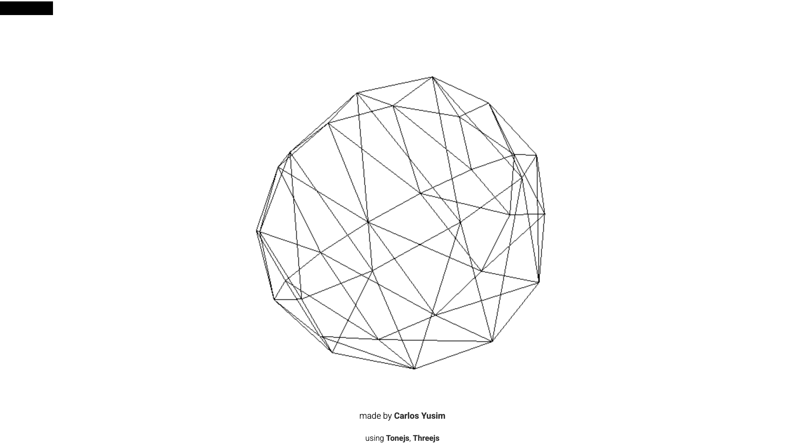
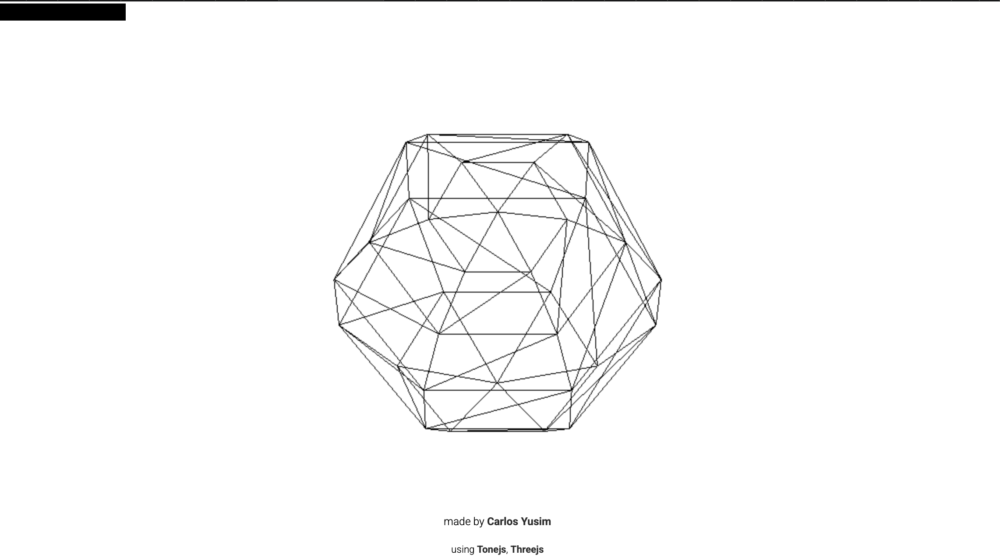
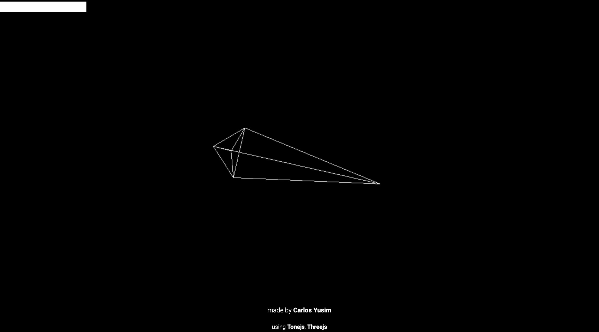
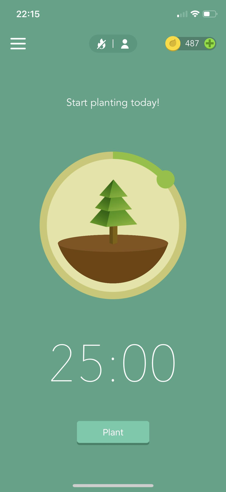
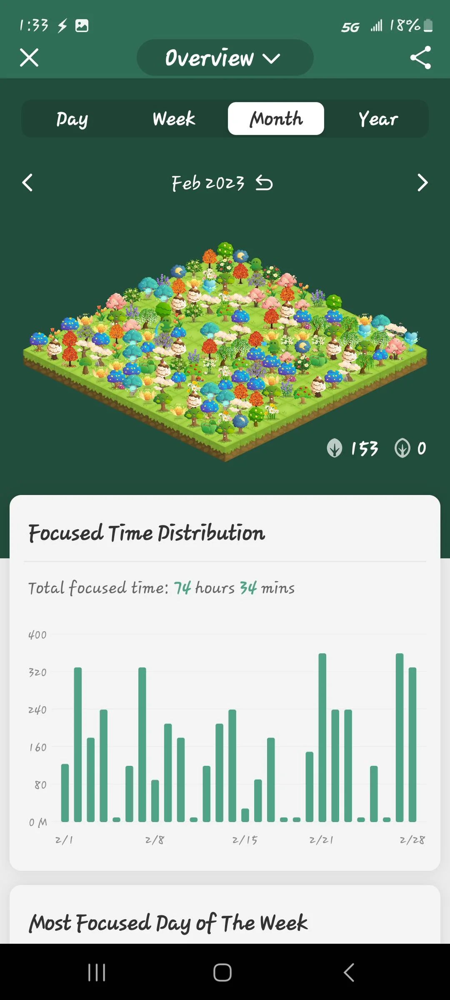
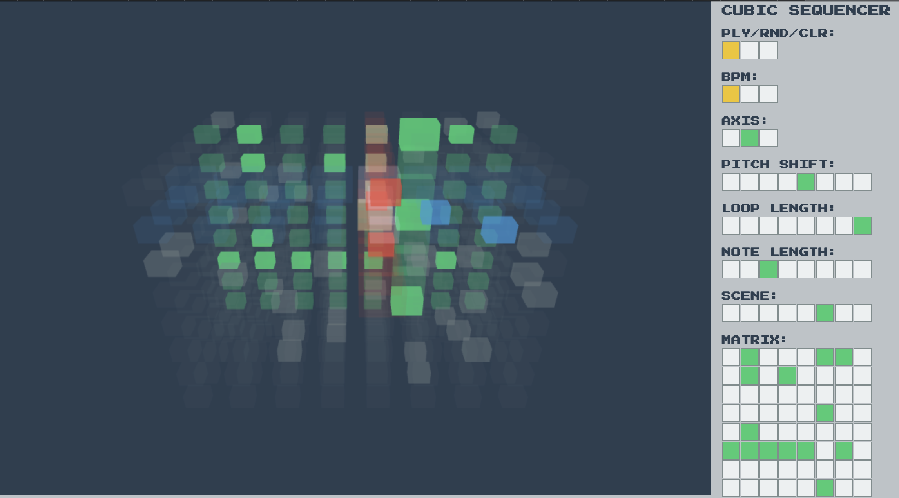
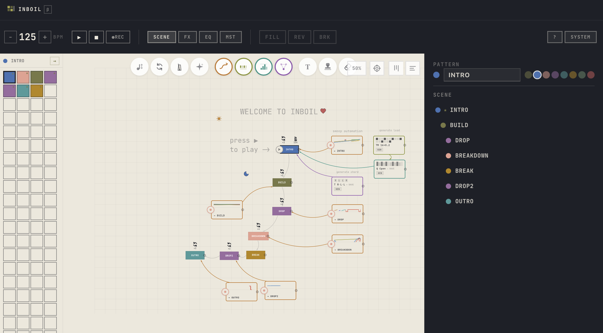

Design Scenario Analysis and Response
The Sonic Timer scenario explores alternative ways of experiencing time through audio rather than relying on traditional visual timers and clocks. Instead of simply showing users how much time has passed, the scenario encourages audio to change the user's perception and experience of time.
My project, Bloom, responds to this scenario by combining a timer with a browser-based musical instrument. Rather than displaying a numerical countdown as the main form of feedback, Bloom uses an evolving soundscape to communicate the progression of a focus session. As time passes, new layers of sound are gradually introduced, causing the music to become richer and more complex.
The purpose of Bloom is to make the passing of time feel more immersive and engaging. The instrument aims to encourage users to focus on their activity without needing to repeatedly check a clock. At the end of a session, the soundscape gradually breaks down and fades, creating an audible transition into a break. The design therefore treats time as something that can be experienced through changes in sound rather than only measured through numbers.
Project Overview
Synopsis
Bloom is a browser-based musical instrument designed to transform a focus session into an evolving musical experience. The instrument begins with a small number of simple sounds and gradually develops as the session progresses. Users can interact with the sound through controls that allow them to influence characteristics such as texture, mood and tempo.
The progression of the music is also controlled by time. As the session continues, additional sound layers are introduced and the musical texture becomes more developed. Rather than relying on a traditional numerical countdown, the changing sound provides feedback about the user's progression through the session.
At the end of the focus period, the soundscape gradually breaks down and fades away, creating a clear transition into a break. This creates a cycle of growth and release, with the sound developing during the focus period before returning towards a simpler state.
Response to the Scenario
Bloom responds to the Sonic Timer scenario by using musical change as an alternative representation of time. The user's progress is communicated through changes in the number, complexity and character of the sounds rather than primarily through a clock or countdown.
The instrument therefore allows time to become part of the musical experience. Users can still influence the sound themselves, while the passage of time acts as another form of interaction that gradually changes the instrument.
Project Framing
Bloom will be framed as a calm and immersive browser-based musical instrument that uses sound to represent the progression of time. The visual interface will remain relatively simple, with the main focus placed on the changing audio experience rather than complex visual animation.
The instrument will include a small set of controls that allow users to influence aspects of the soundscape, such as texture, mood and tempo. These controls will give users some creative control over the instrument while keeping the interface accessible and easy to understand.
Time will act as another form of interaction. As a session progresses, different sound layers will gradually be introduced and developed. The soundscape will become more complex before breaking down and fading at the end of the session.
The project will use HTML and CSS for the interface and JavaScript for interaction, timing and audio changes. Browser-based audio technologies will be used to generate and manipulate the sounds.
The project will avoid complex animations, excessive controls and professional audio-production features. The focus will remain on the relationship between the user, sound and the passage of time.
Interaction Design Analysis
Holdspace
Holdspace is relevant to Bloom because the longer the user holds the interaction, the more layers, beats and sounds are added to the music. This makes the passing of time something that can be experienced through sound, as shown in Figures 1–3, the sound develops as the interaction continues, as the music gradually develops the longer the interaction continues. This approach influenced Bloom by showing how changes in musical layers can communicate the progression of time without relying entirely on a numerical timer.



Forest
Forest is a mobile focus app where users can plant and grow trees while they work, as shown in Figures 4 and 5, Forest represents the progression of a focus session through the growth of a tree.. It uses the Pomodoro technique as well as other focus options, and provides music, nature sounds and background noise during focus sessions. The app also clearly communicates when a focus session ends and when it is time to take a break. Forest is particularly relevant to Bloom because it turns the progression of time into something more meaningful than a countdown. This influenced Bloom's idea of using the development of a soundscape to represent the user's progress through a focus session.


Cubic Sequencer
Cubic Sequencer is a musical instrument that allows users to manipulate sound through a three-dimensional interface. The use of a 3D space makes the interaction feel more exploratory and gives the user a different way of controlling musical elements compared to traditional sliders or buttons. This influenced Bloom by showing how the interface itself can become part of the musical experience, rather than simply providing controls for the sound.

INBOIL
INBOIL is a browser-based musical instrument that allows users to create and manipulate sounds through a visual interface. Its interface combines different musical elements and gives users the ability to experiment with how these elements interact with each other. Rather than requiring the user to understand traditional music-production software, the interface encourages exploration and experimentation. This influenced Bloom by reinforcing the importance of keeping the instrument interactive and approachable, allowing users to experiment with sound without needing advanced musical or technical knowledge.
